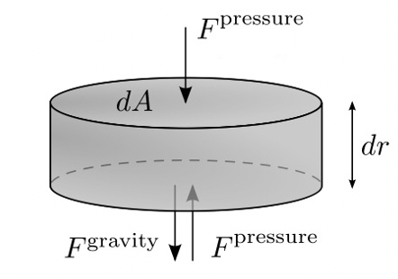

Forrige side🙂 🙁Hydrostatisk likevekt
Vi zoomer nå inn på dette gasselementet som vi har valgt her til å være sylindrisk med sideflateareal dA og høyde dr.

Her ser vi kreftene tegnet inn. Enig i at gravitasjon virker kun nedover? Også enig i at trykket ikke kun virker oppover, gasstrykk virker jo fra alle kanter, ikke sant? Dermed vil vel gasstrykket ovenfra kanselere gasstrykket nedenfra? Og vi er like langt...? Gravitasjon vinner igjen fordi kreftene fra gass-trykket kanselerer hverandre? Og dermed faller solen sammen til et sort hull og atmosfæren vår faller ned! Ikke det som skjer i virkeligheten sier du? Hvorfor ikke det da??? Nåde deg hvis du trykker her uten å ha tenkt deg om først!